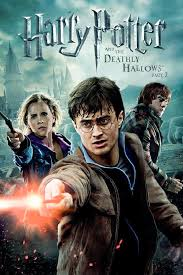

Avatar (marketed as James Cameron's Avatar) is a 2009 American[7][8] epic science fiction film directed, written, produced, and co-edited by James Cameron, and starring Sam Worthington, Zoe Saldana, Stephen Lang, Michelle Rodriguez, and Sigourney Weaver. The film is set in the mid-22nd century, when humans are colonizing Pandora, a lush habitable moon of a gas giant in the Alpha Centauri star system, in order to mine the mineral unobtanium,[9][10] a room-temperature superconductor.[11] The expansion of the mining colony threatens the continued existence of a local tribe of Na'vi – a humanoid species indigenous to Pandora. The film's title refers to a genetically engineered Na'vi body with the mind of a remotely loca ted human that is used to interact with the natives of Pandora.[12]
Warcraft (alternatively known as Warcraft: The Beginning)[4] is a 201 6 American action-fantasy film directed by Duncan Jones and written by Jo nes, Charles Leavitt and Chris Metzen. It is based on the Warcraft video game serie s and novels set in the world of Azeroth. The film stars Travis Fimmel, Paula Pa tton, Ben Foster, Dominic Cooper, Toby Kebbell, Ben Schnetzer, Robert Kazinsky and Da niel Wu. The film portrays the initial encounters between the humans and the orcs and ta kes place in a variety of locations established in the video game series.[5] The film was first announced in 2006 as a project partnership between Legendary Pictures and the game's developer, Blizzard E ntertainment.[6]
Harry Potter is a British-American film series based on the Harry Potter novels by author J. K. Rowling. The series is distributed by Warner Bros. and consists of eight fantasy films, beginning with Harry Potter and the Philosopher's Stone (2001) and culminating with Harry Potter and the Deathly Hallows – Part 2 (2011).[2][3] The series was mainly produced by David Heyman, and stars Daniel Radcliffe, Rupert Grint and Emma Watson as the three leading characters: Harry Potter, Ron Weasley and Hermione Granger. Four directors worked on the series: Chris Columbus, Alfonso Cuarón, Mike Newell, and David Yates.[4] All eight movies had their screenplays written by Steve Kloves, with the exception of Harry Potter and the Order of the Phoenix (2007), written by Michael Goldenberg. Production took over ten years to complete, with the main story arc following Harry Potter's quest to overcome his arch-enemy Lord Voldemort.[5]
The Lord of the Rings (also promoted as The Lord of the Rings: The Motion Picture Trilogy) is a film series consisting of three high fantasy adventure films directed by Peter Jackson. They are based on the novel The Lord of the Rings by J. R. R. Tolkien. The films are subtitled The Fel lowship of the Ring (2001), The Two Towers (2002) and The Return of the King (2003). They were d istributed by New Line Cinema. Considered to be one of the biggest and most ambitious film projects ever undertaken, with an overall bu dget of $281 million (some sources say $310-$330 million),[3] the entire project took eight years, w ith the filming for all three films done simultaneously and entirely in New Zealand, Jackson's native country.[4] Each film in the series also had special extended editions released on DVD a year after their respective theatrical releases. While the films follow the book's general storyline, they do omit some of the novel's plot elements and include some additions to and deviations from the source material.